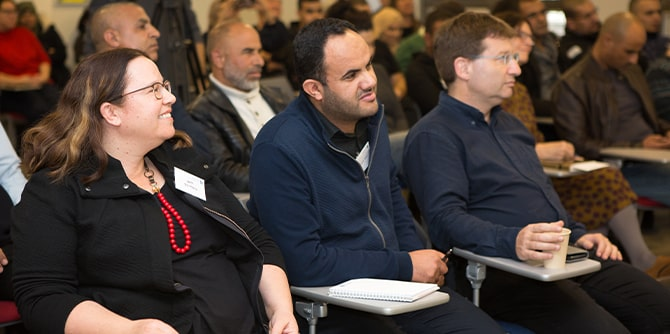
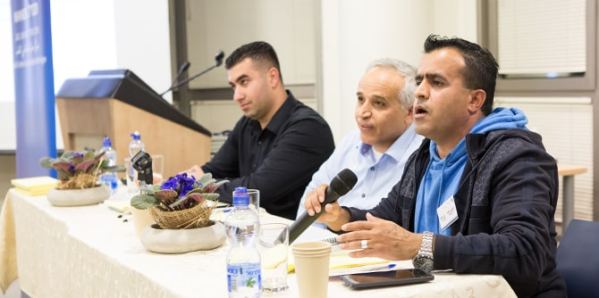
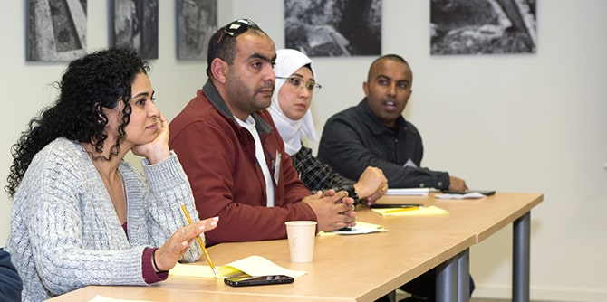
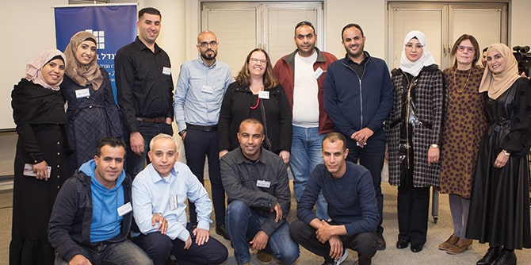

Key community leaders, health professionals, fellows and graduates of the Mandel Center for Leadership in the Negev all gathered for a "Bimat Mandel" (Mandel Platform Event) to examine ways of improving the quality of life in the Arab-Bedouin communities of the Negev. Hosted by the Mandel Program for Regional Leadership in Kseifa and Arara BaNegev, the event focused on health-related issues specific to the Arab-Bedouin society in the Negev, a tribal society that is undergoing a process of change in the face of modernity.
Topics discussed included issues regarding health and social resilience, such as health and safety promotion at home and in schools as well as awareness of preventive medicine. In addition to the members of the Mandel community, participants included leaders from Arab-Bedouin society who hold senior positions in the fields of education, welfare and health, as well as representatives of nonprofit organizations dedicated to advancing quality of life in the Negev.
Dr. Rotem Bresler-Gonen, Kassim Alsraiha, and Professor Nadav Davidovitch
Dr. Adi Nir-Sagi, director of the Mandel Center for Leadership in the Negev, opened the event with a talk about the importance of 'adaptive leadership'. Coined by Ronald Heifetz and Marty Linsky of Harvard University, this term refers to a dedicated leadership that challenges people's familiar reality and creates a new synergic process across all relevant fields of action to improve quality of life. The goal of adaptive leadership is to build practicable partnerships between different parties who work together, as far as possible, to bring about change in a given situation.

Next,
Dr. Farhan Alsana, deputy physician of the Southern District Health Bureau at the Ministry of Health and a fellow of the Mandel Program for Regional Leadership in Kseifa and Arara BaNegev, presented the current situation and health trends in Arab-Bedouin society in the Negev. Following his presentation,
Professor Nadav Davidovitch, head of the School of Public Health at Ben-Gurion University, spoke about prevention and politics in healthcare in Israel. He shared his view that health is influenced by several variables that are not necessarily dependent on each other. Thus, for example, education and community have a crucial role in promoting health and preventing illness through cooperation. In his view, coordinated, cross-system work geared towards a common goal makes it possible to improve the conditions of life in society.

During the event, roundtable discussions were led by the fellows to explore different practicable ways to promote health in Arab-Bedouin society. The focus was on creating more integrated systems between family, education and welfare.
Led by
Kassim Alsraiha, director of the Mandel Program for Leadership in Kseifa and Arara BaNegev, and faculty member
Dr. Rotem Bresler-Gonen, this event presented a significant opportunity for open dialogue on the critical health challenges in the area, and enabled leading local figures to work toward bringing about real change. The 14 Mandel fellows who participated in organizing the event are all regional leaders involved in the Mandel Negev community's efforts to improve the quality of life in the Negev as a whole, with a specific interest in Arab-Bedouin society.
Fellows and faculty of the Mandel Program for Regional Leadership in Kseifa and Arara BaNegev
{kind=link}
{kind=link}
{kind=link}
{kind=link}
{kind=link}